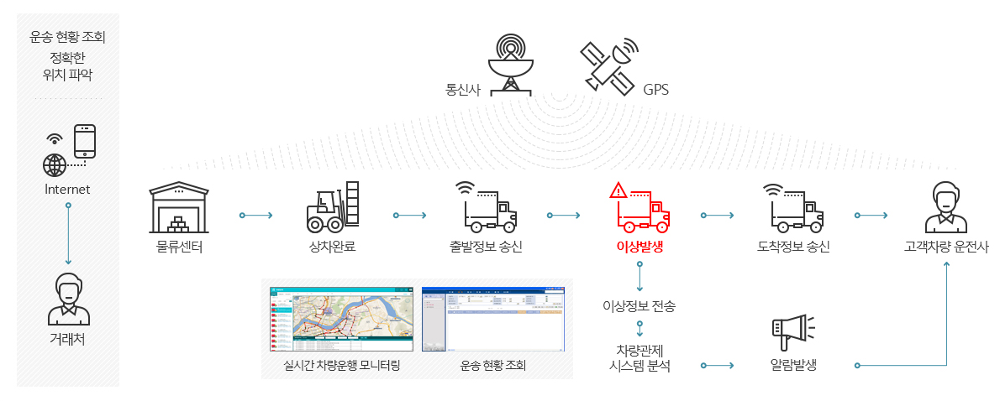

M2M-CVO 서비스 특징
통신단말기를 통해 실시간 차량의 위치 및 상태를 PC와 스마트폰에서 확인 가능한 차량관제 시스템으로 차량의 운행정보를 분석하여 효율적인 차량관리를 지원하는 시스템입니다.
-
실시간 차량관제
- 차량 위치관제
- 차량 원격 제어
- 도난 상태감지 및 추적
- 차량 출발 도착 관리
-
차량정보 관리
- 차량 등록정보 관리
- 사고, 정비/점검내역 관리
- 엔진/온도이상 차량 모니터링
- 방전 예상 차량 모니터링
-
차량 배차 관리
- 차량 배차내역 관리
- 차량별 운행 내역 관리
- 운행기록부 생성
-
다양한 디바이스 지원
- 다양한 디바이스 연계
- 전용 단말기
- 모바일 폰
-
통계분석
- 운행내역 분석
- 시간대별 가동률 분석
- 차종/차량별 가동률 분석
- 기간별 매출 분석
M2M-CVO 도입 효과
-
차량 관리 업무
효율화- 주행거리포함한운행 데이터DB화로분석 및 백업용이
- 사고,정비등의 차량 이력관리로차량관리에 대한편의성증대
-
차량 실시간
관제- 차량상태실시간 체킹으로차량문제발생 시신속대응가능
- 전용단말기및모바일을 통한차량제어기능 제공으로편의성강화
-
차량 관리
비용 절감- 물동량 및 지표분석
- 재고배치 및 동선 분석
- 시뮬레이션 및 최적화
-
운행용도 및
비용 관리- 운행경로제공 (운행일지제출)
- 유류비/유지비절감 (실제운행거리계산 및 위치조회를통한사적인 차량이용방지)
M2M-CVO 비즈니스 구성도
